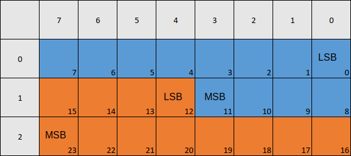
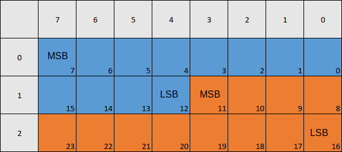

QCanSignalDescription Class
The QCanSignalDescription class describes the rules to extract one value out of the CAN frame and represent it in an application-defined format. More...
| Header: | #include <QCanSignalDescription> |
| CMake: | find_package(Qt6 REQUIRED COMPONENTS SerialBus) target_link_libraries(mytarget PRIVATE Qt6::SerialBus) |
| qmake: | QT += serialbus |
| Since: | Qt 6.5 |
This class is under development and is subject to change.
Public Types
Public Functions
| QCanSignalDescription() | |
| QCanSignalDescription(const QCanSignalDescription &other) | |
| QCanSignalDescription(QCanSignalDescription &&other) | |
| ~QCanSignalDescription() | |
| void | addMultiplexSignal(const QString &name, const MultiplexValues &ranges) |
| void | addMultiplexSignal(const QString &name, const QVariant &value) |
| quint16 | bitLength() const |
| void | clearMultiplexSignals() |
| QString | comment() const |
| QSysInfo::Endian | dataEndian() const |
| QtCanBus::DataFormat | dataFormat() const |
| QtCanBus::DataSource | dataSource() const |
| double | factor() const |
| bool | isValid() const |
| double | maximum() const |
| double | minimum() const |
| MultiplexSignalValues | multiplexSignals() const |
| QtCanBus::MultiplexState | multiplexState() const |
| QString | name() const |
| double | offset() const |
| QString | physicalUnit() const |
| QString | receiver() const |
| double | scaling() const |
| void | setBitLength(quint16 length) |
| void | setComment(const QString &text) |
| void | setDataEndian(QSysInfo::Endian endian) |
| void | setDataFormat(QtCanBus::DataFormat format) |
| void | setDataSource(QtCanBus::DataSource source) |
| void | setFactor(double factor) |
| void | setMultiplexSignals(const MultiplexSignalValues &multiplexorSignals) |
| void | setMultiplexState(QtCanBus::MultiplexState state) |
| void | setName(const QString &name) |
| void | setOffset(double offset) |
| void | setPhysicalUnit(const QString &unit) |
| void | setRange(double minimum, double maximum) |
| void | setReceiver(const QString &receiver) |
| void | setScaling(double scaling) |
| void | setStartBit(quint16 bit) |
| quint16 | startBit() const |
| QCanSignalDescription & | operator=(const QCanSignalDescription &other) |
| QCanSignalDescription & | operator=(QCanSignalDescription &&other) |
Detailed Description
The QCanSignalDescription class can be used to provide a signal description and later use it to decode a received QCanBusFrame or encode the input data into a QCanBusFrame that can be sent to the receiver.
General Description
Each CAN frame can contain multiple values. The rules to extract the values from a CAN frame include the following:
- Data source (frame ID or payload).
- Data endianness. See Data Endianness Processing section for more details.
- Data format.
- Start bit position.
- Data length in bits.
- Multiplexing options.
Start bit position is specified relative to the selected data source. The bits are counted starting from the LSB.
Once the data is extracted, it might require conversion to an application-defined format. The following parameters can be used for that:
- Various parameters for converting the extracted value to a physical value (factor, offset, scale).
- Expected data range.
- Data units.
The QCanSignalDescription class provides methods to control all those parameters.
Data Endianness Processing
Little endian and big endian data is encoded differently. For big endian values, start bit positions are given for the most significant bit. For little endian values, the start position is that of the least significant bit.
Let's consider two examples. In both examples we will encode two 12-bit values in the 3-byte payload.
Little Endian
For the little endian case the data layout can be represented by the following image:

Here the columns represent bit numbers, and the rows represent byte numbers. LSB marks the first (least significant) bit of the value, and MSB marks the last (most significant) bit of the value. The blue color marks the first value, and the orange color marks the second value.
The information about these values will be encoded in QCanSignalDescription in the following way:
QCanSignalDescription signal1; signal1.setDataEndian(QSysInfo::Endian::LittleEndian); signal1.setStartBit(0); signal1.setBitLength(12); // other parameters for signal1 QCanSignalDescription signal2; signal2.setDataEndian(QSysInfo::Endian::LittleEndian); signal2.setStartBit(12); signal2.setBitLength(12); // other parameters for signal2
Big Endian
The following image represents the value layout for the big endian case:

The values can be represented in QCanSignalDescription in the following way:
QCanSignalDescription signal1; signal1.setDataEndian(QSysInfo::Endian::BigEndian); signal1.setStartBit(7); signal1.setBitLength(12); // other parameters for signal1 QCanSignalDescription signal2; signal2.setDataEndian(QSysInfo::Endian::BigEndian); signal2.setStartBit(11); signal2.setBitLength(12); // other parameters for signal2
Note how the start bits are different from the little endian case. Also the values are aligned differently.
Multiplexed Signals Explained
There are two common ways to encode the data in the CAN payload:
- Each range of bits always represents the same signal. For example,
Bytes 0-1in a payload can represent an engine speed (in rpm), andBytes 2-3can represent the vehicle speed (in km/h). - The same range of bits can represent different data, depending on the values of some other bits in the payload. For example, if
Byte 0has the value0, theBytes 1-2represent an engine speed (in rpm), and ifByte 0has the value1, the sameBytes 1-2represent a vehicle speed (in km/h).
The second case uses signal multiplexing. In the provided example we will have three signals. The first signal represents the value of Byte 0 and acts like a multiplexor signal. The other two signals represent an engine speed and a vehicle speed respectively, but only one of them can be extracted from the CAN payload at a time. Which signal should be extracted is defined by the value of the multiplexor signal.
In more complicated cases the payload can have multiple multiplexor signals. In such cases the signal can be extracted from the payload only when all multiplexors contain the expected values.
Value Conversions
In many cases the signals transferred over CAN bus cannot hold the full range of the physical values that they represent. To overcome these limitations, the physical values are converted to a smaller range before transmission, and can be restored on the receiving end.
The following formulas are used to convert between the physical value and the signal's value:
physicalValue = scaling * (signalValue * factor + offset); signalValue = (physicalValue / scaling - offset) / factor;
The factor and scaling parameters cannot be equal to 0.
If any of the parameters equals to qQNaN(), it is not used during the conversion. If all of the parameters are equal to qQNaN() (which is the default), the conversion is not performed.
Member Type Documentation
[alias] QCanSignalDescription::MultiplexSignalValues
[alias] QCanSignalDescription::MultiplexValues
Member Function Documentation
QCanSignalDescription::QCanSignalDescription()
Creates an empty signal description.
QCanSignalDescription::QCanSignalDescription(const QCanSignalDescription &other)
Creates a signal description with the values copied from other.
[noexcept] QCanSignalDescription::QCanSignalDescription(QCanSignalDescription &&other)
Creates a signal description by moving from other.
Note: The moved-from QCanSignalDescription object can only be destroyed or assigned to. The effect of calling other functions than the destructor or one of the assignment operators is undefined.
[noexcept] QCanSignalDescription::~QCanSignalDescription()
Destroys this signal description.
void QCanSignalDescription::addMultiplexSignal(const QString &name, const MultiplexValues &ranges)
Adds a new multiplexor signal for this signal. The name parameter contains the name of the multiplexor signal, and the ranges parameter contains the desired value ranges.
If this signal already has desired value ranges for the multiplexor signal name, the ranges are overwritten.
See also multiplexState(), multiplexSignals(), clearMultiplexSignals(), and setMultiplexSignals().
void QCanSignalDescription::addMultiplexSignal(const QString &name, const QVariant &value)
This is an overloaded function.
This is a convenience overload for the case when the multiplexor signal is expected to have only one specific value, not a range of values.
The name parameter contains the name of the multiplexor signal, and the value parameter contains the desired value.
If this signal already has desired value ranges for the multiplexor signal name, the ranges are overwritten.
See also multiplexState(), multiplexSignals(), clearMultiplexSignals(), and setMultiplexSignals().
quint16 QCanSignalDescription::bitLength() const
Returns the bit length of the signal's value.
See also setBitLength(), startBit(), and setStartBit().
void QCanSignalDescription::clearMultiplexSignals()
Removes all multiplexor signals for this signal.
See also multiplexSignals(), setMultiplexSignals(), and addMultiplexSignal().
QString QCanSignalDescription::comment() const
Returns the comment for the signal.
This parameter is introduced only for extra description. It's not used during signal processing.
See also setComment().
QSysInfo::Endian QCanSignalDescription::dataEndian() const
Returns the data endian of the signal's value.
By default, BigEndian is used.
Note: The data endian is ignored if the dataFormat() is set to AsciiString.
See also setDataEndian() and QSysInfo::Endian.
QtCanBus::DataFormat QCanSignalDescription::dataFormat() const
Returns the data format of the signal's value.
By default, SignedInteger is used.
See also setDataFormat() and QtCanBus::DataFormat.
QtCanBus::DataSource QCanSignalDescription::dataSource() const
Returns the data source of the signal's value.
By default, Payload is used.
See also setDataSource() and QtCanBus::DataSource.
double QCanSignalDescription::factor() const
Returns the factor that is used to convert the signal's value to a physical value and back.
By default the function returns qQNaN(), which means that a factor is not used.
The Value Conversions section explains how this parameter is used.
See also setFactor(), offset(), and scaling().
bool QCanSignalDescription::isValid() const
Returns true when the signal description is valid and false otherwise.
A valid signal description must fulfill the following conditions:
- have a non-empty name()
- have bitLength()
== 32if the dataFormat() is Float - have bitLength()
== 64if the dataFormat() is Double - the bitLength() must be a multiple of
8if the dataFormat() is AsciiString - the bitLength() must be greater than
0and less than or equal to64.
See also bitLength(), dataFormat(), and name().
double QCanSignalDescription::maximum() const
Returns the maximum supported value for the signal.
By default the function returns qQNaN(), which means that there is no maximum value.
See also setRange() and minimum().
double QCanSignalDescription::minimum() const
Returns the minimum supported value for the signal.
By default the function returns qQNaN(), which means that there is no minimum value.
See also setRange() and maximum().
MultiplexSignalValues QCanSignalDescription::multiplexSignals() const
Returns the multiplexor signals and their desired values that are used to properly identify this signal.
The returned hash contains signal names as keys and respective desired ranges of values as values.
This signal's value can be extracted from the payload only when all the signals from the hash have the expected values.
See also multiplexState(), clearMultiplexSignals(), setMultiplexSignals(), and addMultiplexSignal().
QtCanBus::MultiplexState QCanSignalDescription::multiplexState() const
Returns the multiplex state of the signal.
See the Multiplexed Signals Explained section for more details on multiplexed signals.
By default this method returns None.
See also setMultiplexState() and QtCanBus::MultiplexState.
QString QCanSignalDescription::name() const
Returns the name of the signal.
See also setName() and isValid().
double QCanSignalDescription::offset() const
Returns the offset that is used to convert the signal's value to a physical value and back.
By default the function returns qQNaN(), which means that an offset is not used.
The Value Conversions section explains how this parameter is used.
See also setOffset(), factor(), and scaling().
QString QCanSignalDescription::physicalUnit() const
Returns the physical unit (e.g. km/h) of the signal's value or an empty string if the unit is not set.
This parameter is introduced only for extra description. It's not used during signal processing.
See also setPhysicalUnit().
QString QCanSignalDescription::receiver() const
Returns the receiver node for this signal.
This parameter is introduced only for extra description. It's not used during signal processing.
See also setReceiver().
double QCanSignalDescription::scaling() const
Returns the scaling that is used to convert the signal's value to a physical value and back.
By default the function returns qQNaN(), which means that scaling is not used.
The Value Conversions section explains how this parameter is used.
See also setScaling(), offset(), and factor().
void QCanSignalDescription::setBitLength(quint16 length)
Sets the bit length of the signal's value to length.
See also bitLength(), startBit(), and setStartBit().
void QCanSignalDescription::setComment(const QString &text)
Sets the comment for the signal to text.
This parameter is introduced only for extra description. It's not used during signal processing.
See also comment().
void QCanSignalDescription::setDataEndian(QSysInfo::Endian endian)
Sets the data endian of the signal's value to endian.
See also dataEndian() and QSysInfo::Endian.
void QCanSignalDescription::setDataFormat(QtCanBus::DataFormat format)
Sets the data format of the signal's value to format.
See also dataFormat() and QtCanBus::DataFormat.
void QCanSignalDescription::setDataSource(QtCanBus::DataSource source)
Sets the data source of the signal's value to source.
See also dataSource() and QtCanBus::DataSource.
void QCanSignalDescription::setFactor(double factor)
Sets the factor that is used to convert the signal's value to a physical value and back to factor.
Pass qQNaN() to this method to skip this parameter during the conversion.
The factor cannot be 0. An attempt to set a zero factor is equivalent to setting it to qQNaN().
The Value Conversions section explains how this parameter is used.
See also factor(), setOffset(), and setScaling().
void QCanSignalDescription::setMultiplexSignals(const MultiplexSignalValues &multiplexorSignals)
Sets the multiplexor signals for this signal to multiplexorSignals.
The multiplexorSignals hash must contain signal names as keys and respective desired value ranges as values.
See also multiplexState(), multiplexSignals(), clearMultiplexSignals(), and addMultiplexSignal().
void QCanSignalDescription::setMultiplexState(QtCanBus::MultiplexState state)
Sets the multiplex state of the signal to state.
See the Multiplexed Signals Explained section for more details on multiplexed signals.
See also multiplexState() and QtCanBus::MultiplexState.
void QCanSignalDescription::setName(const QString &name)
Sets the name of the signal to name.
The signal's name must be unique within a CAN message.
See also name().
void QCanSignalDescription::setOffset(double offset)
Sets the offset that is used to convert the signal's value to a physical value and back to offset.
Pass qQNaN() to this method to skip this parameter during the conversion.
The Value Conversions section explains how this parameter is used.
See also offset(), setFactor(), and setScaling().
void QCanSignalDescription::setPhysicalUnit(const QString &unit)
Sets the physical unit (e.g. km/h) of the signal's value.
This parameter is introduced only for extra description. It's not used during signal processing.
See also physicalUnit().
void QCanSignalDescription::setRange(double minimum, double maximum)
Sets the minimum and maximum for the signal's value.
Setting one or both of the parameters to qQNaN() means that the corresponding limit will not be used.
See also minimum() and maximum().
void QCanSignalDescription::setReceiver(const QString &receiver)
Sets the receiver node for this signal.
This parameter is introduced only for extra description. It's not used during signal processing.
See also receiver().
void QCanSignalDescription::setScaling(double scaling)
Sets the scaling that is used to convert the signal's value to a physical value and back to scaling.
Pass qQNaN() to this method to skip this parameter during the conversion.
The scaling cannot be 0. An attempt to set zero scaling is equivalent to setting it to qQNaN().
The Value Conversions section explains how this parameter is used.
See also scaling(), setOffset(), and setFactor().
void QCanSignalDescription::setStartBit(quint16 bit)
Sets the start bit of the signal's value in the dataSource() to bit.
See also startBit(), bitLength(), and setBitLength().
quint16 QCanSignalDescription::startBit() const
Returns the start bit of the signal's value in the dataSource().
See also setStartBit(), bitLength(), and setBitLength().
QCanSignalDescription &QCanSignalDescription::operator=(const QCanSignalDescription &other)
Assigns the values from other to this signal description.
[noexcept] QCanSignalDescription &QCanSignalDescription::operator=(QCanSignalDescription &&other)
Move-assigns the values from other to this signal description.
Note: The moved-from QCanSignalDescription object can only be destroyed or assigned to. The effect of calling other functions than the destructor or one of the assignment operators is undefined.